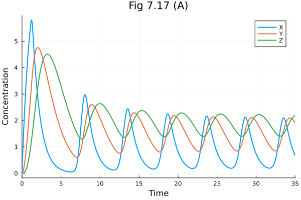
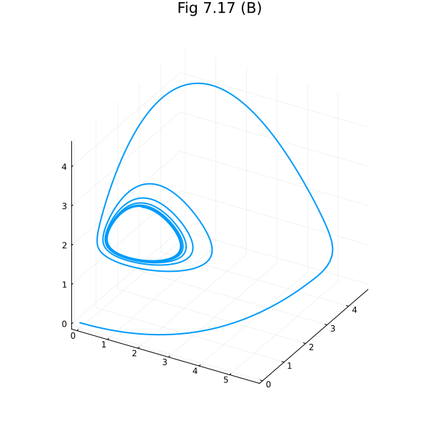

Fig 7.17#
Goodwin oscillator model: https://en.wikipedia.org/wiki/Goodwin_model_(biology)
using Catalyst
using ModelingToolkit
using OrdinaryDiffEq
using Plots
Plots.default(linewidth=2)
rn = @reaction_network begin
(a / (k^n + Z^n), b), 0 <--> X
(α * X, β), 0 <--> Y
(γ * Y, δ), 0 <--> Z
end
\[\begin{split} \begin{align*}
\varnothing &\xrightleftharpoons[b]{\frac{a}{k^{n} + Z^{n}}} \mathrm{X} \\
\varnothing &\xrightleftharpoons[\beta]{X \alpha} \mathrm{Y} \\
\varnothing &\xrightleftharpoons[\delta]{Y \gamma} \mathrm{Z}
\end{align*}
\end{split}\]
ps = [
:a => 360,
:k => 1.368,
:b => 1,
:α => 1,
:β => 0.6,
:γ => 1,
:δ => 0.8,
:n => 12
]
u0 = zeros(3)
tend = 35.0
35.0
prob = ODEProblem(rn, u0, tend, ps);
sol = solve(prob)
retcode: Success
Interpolation: 3rd order Hermite
t: 74-element Vector{Float64}:
0.0
9.999999999999999e-5
0.0010999999999999998
0.011099999999999997
0.041561068228358915
0.08505007717877648
0.1400425786140992
0.2146417543721738
0.31201584322447784
0.4390615514552524
⋮
30.399216275051014
31.019732084200392
31.782434145750724
32.3743621530088
32.9240804229318
33.47916779303648
33.94226811022297
34.51649669667564
35.0
u: 74-element Vector{Vector{Float64}}:
[0.0, 0.0, 0.0]
[0.0008380069445083983, 4.1900207549215754e-8, 1.3966642737483395e-12]
[0.009213468964138544, 5.067222002693886e-6, 1.8578451380267915e-9]
[0.09250904681199522, 0.0005132339779722289, 1.8975593394034878e-6]
[0.34116338821048725, 0.00707949135303762, 9.780450237545606e-5]
[0.683292323356918, 0.028970469802743353, 0.0008166279287941561]
[1.095152006170422, 0.07629612549303946, 0.0035279811532654016]
[1.6188553354727238, 0.17233567095951102, 0.012150996243756602]
[2.246222895432165, 0.34611339279357084, 0.035232309851159625]
[2.978081158465377, 0.6417560311991968, 0.09109022137495451]
⋮
[0.5089918673039986, 1.7667819689484219, 2.2228229156189765]
[0.28809734163897727, 1.4141811569212628, 2.124048031926316]
[0.1968643845476331, 1.0306516147476297, 1.8357226708588872]
[0.41078846058556956, 0.8572566168585168, 1.5778546803848004]
[1.2775009216740119, 0.9943227874496074, 1.4141809791269389]
[2.09184033587058, 1.5588431984568494, 1.4789312290822436]
[1.7685358003392524, 1.9820078566219494, 1.720193524322017]
[1.077253273370024, 2.078828993715113, 2.0395698694667264]
[0.6803805235209693, 1.9141052038293755, 2.18847444440265]
plot(sol, title="Fig 7.17 (A)", xlabel="Time", ylabel="Concentration")

plot(sol, idxs=(rn.X, rn.Y, rn.Z), title="Fig 7.17 (B)", legend=false, size=(600, 600))

This notebook was generated using Literate.jl.